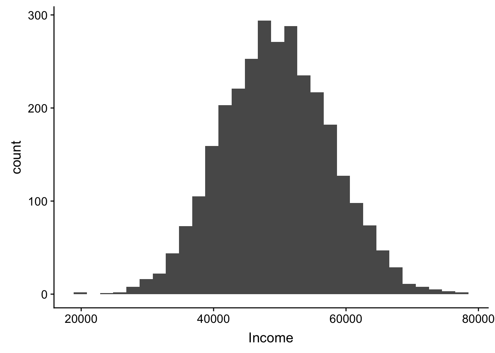
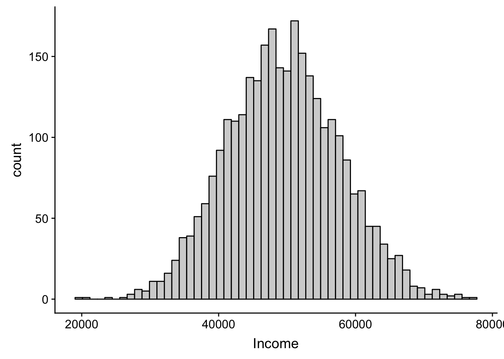
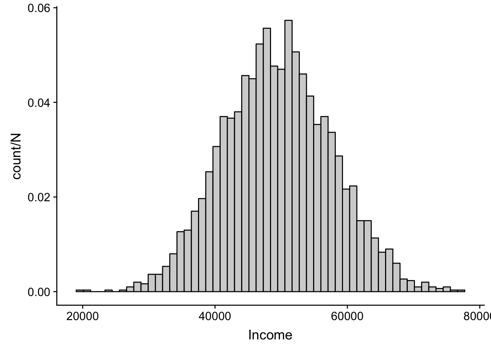
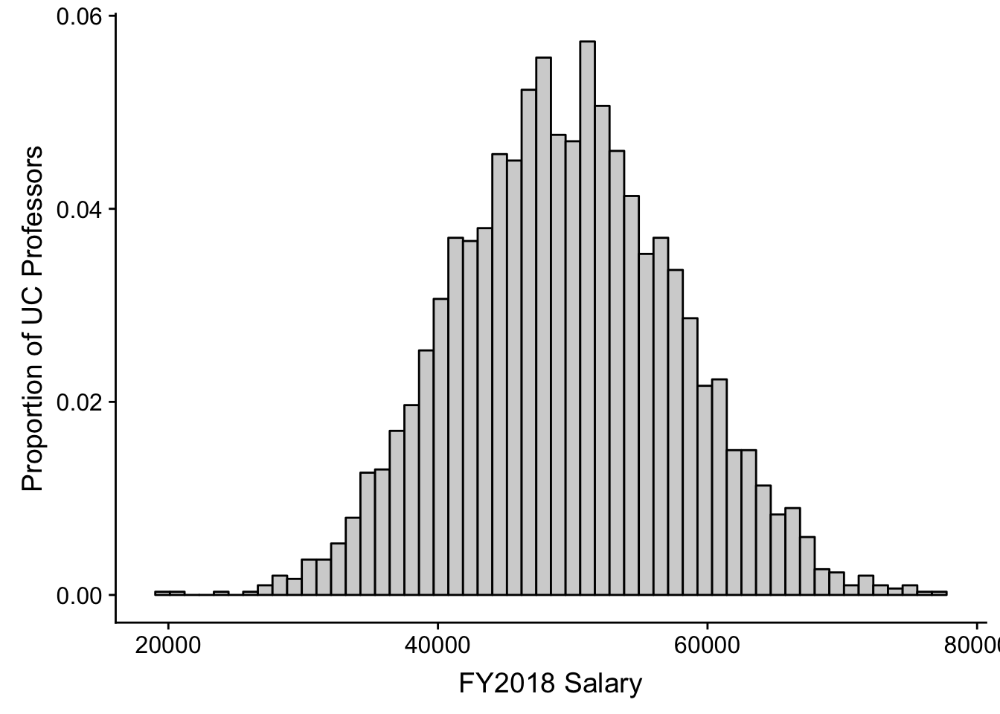
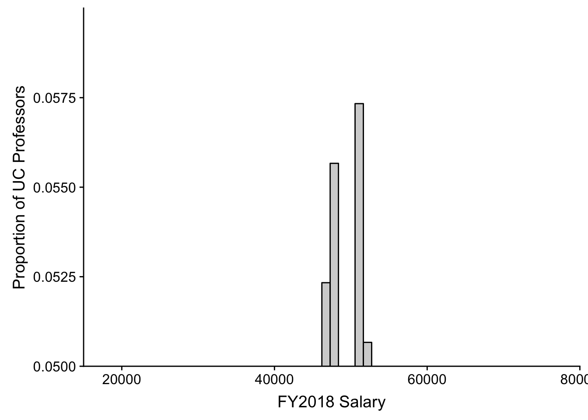
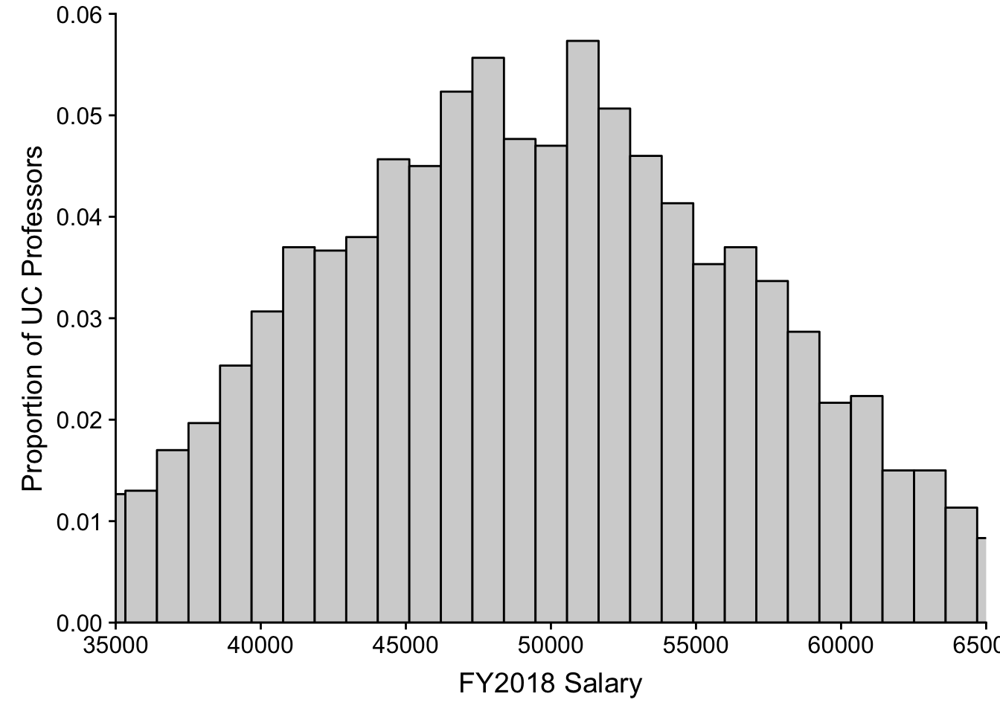
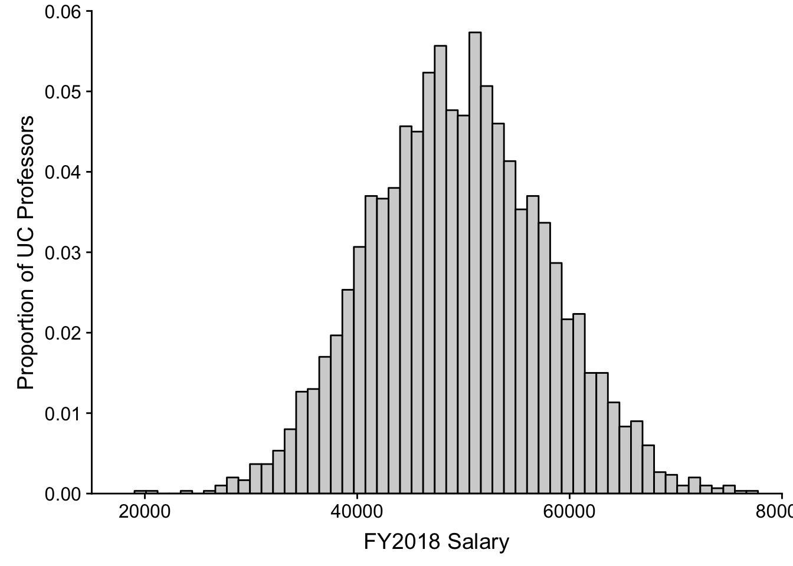
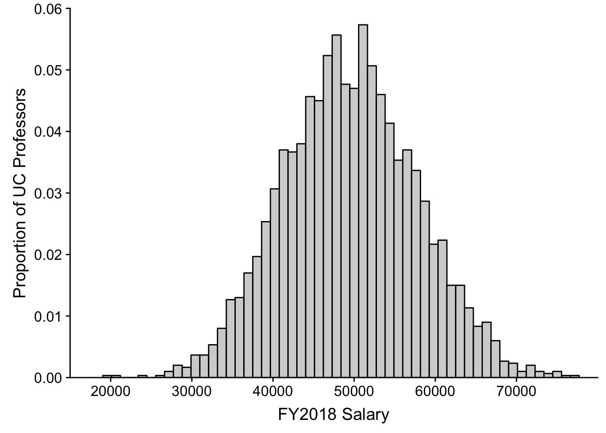
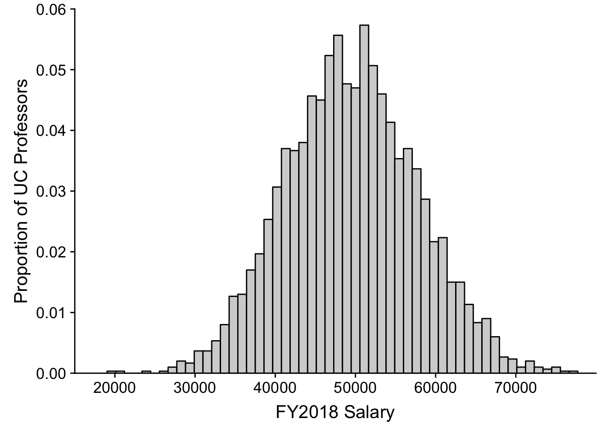
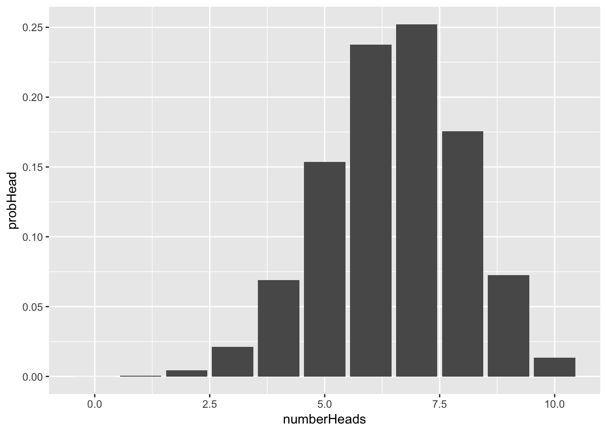

A Plotting histograms and probability distributions
Hi all, a few of you have asked for something a little more concrete with respect to producing APA tables and figures in R. Before continuing on, let me say that the “Intro to tidyverse” and “Data Visualization with ggplot, pts 1 & 2” provide excellent tutorials on using ggplot to contruct a wide variety of figures. If you are having issues with the fundamentals of ggplot then I would suggest starting there (with the acknowledgement that Data Visualization with ggplot, pt 2 may be a little overkill for this course).
Here I’m going to walk you thru the construction of a histogram plots and lay out the logic of getting those plots in appropriate APA format. For the purposes of keeping things simple I’m going to focus on the types of data that we have encountered in class so far, namely frequency data and data with two means. As own designs and analyses become more complex, I will have sections at the end of each week that build upon what we do here (scatterplots, regression plots, interaction plots, oh my!)
There are a few packages that we will introduce in this walkthrough, including: devtools, cowplot, and plotly. I’ll go into further detail what they can do for us as we move along, but for now let’s just load in the one we are most familiar with:
pacman::p_load(tidyverse)For the purposes of this walk-through I will be using the FacultyIncome.txt dataset from Week 3’s homework. If you want to follow along, you’ll need to import that data (I’ve saved it to the object FacultyIncome)
A.1 The Basics
In general, the basic procedure for constructing a plot goes throu the following steps:
- link to the data and tell
ggplothow to structure its output - tell
ggplotwhat kind of plot to make - adjust the axes and labels if necessary
- adjust the appearance of the plot for APA (or other appropriate format)
- add a legend if necessary
- save or export the plot
We won’t be doing much in terms of a legend today, but we will address legends as they become necessary (on the other side of the midterm).
A.1.1 Step 1: Building the canvas
Here you need to be thinking about what form you want the plot to take. Key points:
data =: what data set you will be pulling from. This needs to be in the form of adata_frame(), withnamesin the headers. For most data that we will be working with from here on out. That will be the case, though for constructed / simulation data you may have to do this manually.
If you are unsure of the header names you can see them by:
names(FacultyIncome)## [1] "Gender" "Height" "Income"Note that depending on what guide you follow you may also include mapping=aes() here as well. This would include telling R eventually what info goes on each axis, how data is grouped, etc. BUT this info can also be relayed in Step 2, and I think that conceptually it make more sense to put it there.
So for Step 1, just tell ggplot what data we are using and save our Step 1 to an object called p
p <- ggplot(data = FacultyIncome)
show(p)
As you can see we’ve created a blank canvas—nothing else to see here.
A.1.2 Step 2: Tell ggplot what kind of plot to make.
Plots can take several forms, or geoms (geometries), most common include: + histogram: geom_histogram + boxplot: geom_boxplot + scatter: geom_point + bar: geom_bar + line: geom_line
Here we are creating a histogram, so in Step 2 we add geom_histogram() to our original plot p. We also need to tell ggplot how to go about constructing our histogram. This info would be including in the mapping = aes() argument. This tells ggplot about the general layout of the plot, including: + x: what is on the x-axis + y: what’s on the y-axis (usually your dv, although for histograms this ends up being frequency and x is your dv) + group: how should the data be grouped? This will become important for more complex designs.
What aes() options you choose in large part is determined by what kind of plot you intend to make. For our histogram we want bins of Income on the x-axis and frequency ..count.. on the y-axis.
# Repeating previous step for clarity:
p <- p <- ggplot(data = FacultyIncome)
# new step:
p <- p + geom_histogram(mapping = aes(x = Income, y = ..count..)) # take our original 'p', add a geom, save the new plot to 'p'
# show the result
show(p)## `stat_bin()` using `bins = 30`. Pick better value with `binwidth`.
The default geom_histogram() produces the above plot. However, we can tweak several arguments in geom_histogram() to change the presentation of data, including:
binwidth: the width of each bin, or…bins: the number of binscolor: the color of the perimeter of each bin/bar (notecolorrefers to lines)fill: the color of the bin/bar itself (notefillrefers to spaces)mapping = aes(): change the mapping (see below)
For example, toget this in APA format we would like light gray bars with black lines. Rather than the default 30 bins, we elect to use the rule of thumb \(\sqrt{N}\).
p <- p <- ggplot(data = FacultyIncome) #step 1
# before plotting get the get the number of observations
N <- nrow(FacultyIncome)
# step 2:
p <- p + geom_histogram(mapping = aes(x = Income, y = ..count..), fill = "light gray",
color = "black", bins = sqrt(N))
# show the result
show(p)
Not sure if increasing the number of bins here actually improves things (it’s really a subjective choice), but let’s stick with this.
You may elect to convey the information in probability rather than frequency count. To do this you can modify the aes() within geom_histogram. For example, modifying the previous chunk:
p <- p <- ggplot(data = FacultyIncome, mapping = aes(x = Income)) #step 1
N <- nrow(FacultyIncome) # get the number of observations
p <- p + geom_histogram(mapping = aes(x=Income,y=..count../N), # divide count by total N
fill="light gray",
color="black",
bins = sqrt(N))
# show the result
show(p)
A.1.3 Step 3: Adjust the axes and labels
The plot at the end of Step 2 is almost there, but there are a few issues that remain. First, our axis labels could be more desciptive than “count/N” and “Income”. This is solved by adding the arguments xlab() and ylab() to our plot. For example:
# step 1:
p <- p <- ggplot(data = FacultyIncome, mapping = aes(x = Income)) #step 1
# step 2:
N <- nrow(FacultyIncome) # get the number of observations
p <- p + geom_histogram(mapping = aes(x=Income,y=..count../N), # divide count by total N
fill="light gray",
color="black",
bins = sqrt(N))
# step 3:
p <- p + xlab("FY2018 Salary") + ylab("Proportion of UC Professors")
show(p)
Another issue may be that gap that sits between the x-axis (x=0) and the axis scale. This can be remedied by adding the following to our plot p:
p <- p + coord_cartesian(xlim = c(10000, 80000), ylim = c(0, 0.06), expand = FALSE)The coord_cartesian() command allows us to zoom in or zoom out of our axes. There are several arguments that this command takes including:
xlim=: takes a pair of valuesc(lower,upper)for limits of x-axisylim=: same as above, but for y-axisexpand=: do you want to create additional whitespace between your data and axes?
For example if I wanted to only show Incomees with Proportions of UC Professors between .05 and .06 I can just zoom into my plot (with needing to go back and filter my original data)
p <- p + coord_cartesian(xlim = c(15000, 80000), ylim = c(0.05, 0.06), expand = FALSE)## Coordinate system already present. Adding new coordinate system, which will replace the existing one.show(p)
Or if I instead wanted to only focus on those Profs making between 35K and 65K:
p <- p + coord_cartesian(xlim = c(35000, 65000), ylim = c(0, 0.06), expand = FALSE)## Coordinate system already present. Adding new coordinate system, which will replace the existing one.show(p)
Not something I would in this case, but just an example. OK, let’s get back to our working plot:
# step 1:
p <- p <- ggplot(data = FacultyIncome, mapping = aes(x = Income)) #step 1
# step 2:
N <- nrow(FacultyIncome) # get the number of observations
p <- p + geom_histogram(mapping = aes(x=Income,y=..count../N), # divide count by total N
fill="light gray",
color="black",
bins = sqrt(N))
# step 3:
p <- p + xlab("FY2018 Salary") +
ylab("Proportion of UC Professors") +
coord_cartesian(xlim=c(15000, 80000), ylim=c(0,.06), expand = FALSE)
show(p)
One last thing to consider regarding our axes are the location of labels on the scale. For example the y-axis has labels at every .01 and the x-axis at every 20K. What if we want to change the labels on the x-axis? Here we can add scale_y_continuous to our plot p. We need to tell scale_y_continuous what our desired sequence is. You’ve done sequences before, like the sequence from 0 to 10:
0:10## [1] 0 1 2 3 4 5 6 7 8 9 10However, if we want to say count by 2’s the command is a little more involved
seq(0, 10, 2)## [1] 0 2 4 6 8 10where seq(start, stop, by). So to start at 20K and stop at 70K going by 10K in our plot we add breaks= seq(20000, 80000, 10000):
p <- p <- ggplot(data = FacultyIncome, mapping = aes(x = Income)) #step 1
# step 2:
N <- nrow(FacultyIncome) # get the number of observations
p <- p + geom_histogram(mapping = aes(x=Income,y=..count../N), # divide count by total N
fill="light gray",
color="black",
bins = sqrt(N))
# step 3:
p <- p + xlab("FY2018 Salary") +
ylab("Proportion of UC Professors") +
coord_cartesian(xlim=c(15000, 80000), ylim=c(0,.06), expand = FALSE) +
scale_x_continuous(breaks = seq(20000,70000,10000))
show(p)
A.1.4 Step 4: Adjusting for APA
While the plot at the end of Step 3 is almost there, there are a few issues remaining, Including that grey grid in the background and the lack of axis lines. In the past these changes would need to be done line by line. But fortunately for us we are in the glorious present, and there is a library that does a lot of this cleaning for you.
Introducting cowplot!!!!
pacman::p_load(cowplot)OK, we’ve loaded cowplot. Now what? Simply re-run the previous chunk, but this time adding theme_cowplot() to the end. Note that running ? theme_cowplot shows that it includes arguments for font size, font family (type), and line size. Below I’m just going to ask for size “15” font. I typically leave the font type alone, but if I do change it I may occasionally use font_family="Times":
p <- ggplot(data = FacultyIncome, mapping = aes(x = Income)) #step 1
# step 2:
N <- nrow(FacultyIncome) # get the number of observations
p <- p + geom_histogram(mapping = aes(x=Income,y=..count../N), # divide count by total N
fill="light gray",
color="black",
bins = sqrt(N))
# step 3:
p <- p + xlab("FY2018 Salary") +
ylab("Proportion of UC Professors") +
coord_cartesian(xlim=c(15000, 80000), ylim=c(0,.06), expand = FALSE) +
scale_x_continuous(breaks = seq(20000,70000,10000)) +
theme_cowplot(font_size = 15)
show(p)
Easy-peasy! You’ll note that cowplot adjusted your fonts, fixed your axes, and removed that nasty background. Even more, once cowplot is loaded it doesn’t need to be called to do this. It just sits in the background and automatically adjusts the format of any plot you make using ggplot. If you ever wanted to return to the default plot style you can run the following:
theme_set(theme_gray())But for now cowplot FTW!!! (other cool cowplot things will show up in the advanced section).
A.1.5 Step 5: Add and adjust the legend
Doesn’t make sense in this context so not going to spend a lot of time here, but more on this when it’s relevent (see you in a few weeks)
A.1.6 Step 6: Save the ggplot.
Within command-line, plots can be saved using the ggsave() function. Note that both cowplot and ggplot libraries have a ggsave() function. They for the most part do the same thing. If you’ve installed cowplot, your computer will just default to that. Lets get some help on ggsave() to see exactly what the parameters are:
`?`(ggsave())from the result the important arguments are:
filename = Filename of plot plot = Plot to save, defaults to last plot displayed. device = what kind of file, depending on extension. path = Path to save plot to (defaults to project folder). scale = Scaling factor. width = Width (defaults to the width of current plotting window). height = Height (defaults to the height of current plotting window). units = Units for width and height (in, cm, or mm). dpi = DPI to use for raster graphics.
So to save the previous plot to my project folder, p as a .pdf to a file names “histogram.pdf” with the dimensions 8-in by 6-in, and a DPI of 300 (300 is usually the min you want for print)
ggsave(filename = "histogram.pdf", plot = p, width = 8, height = 6, units = "in",
dpi = 300)if I wanted an image file like a .png, I just change the filename extension:
ggsave(filename = "histogram.png", plot = p, width = 8, height = 6, units = "in",
dpi = 300)Note that you can also copy and save plots that are printed in your Notebook and Plots tab. In the notebook, simply right click on top of the plot for a quick Copy or Download. For plots printed to the Plots tab, click the Export button (this gives you all the options as ggsave).
A.2 A note about your BONUS on Week 4.
In the example histogram we generated a frequency plot based on counts from our data. We converted it to probability data by dividing our counts by the total number of observations. If you were to run sufficiently large simulation of draws and follow the steps above) modifying as needed) you should be create something approximating what is asked for Week 4’s bonus.
However, you can also produce a plot from the table you created using the dbinom() function by modifying the mapping of y. Here, I’m going to re-create the probTable of possible outcomes from Week 4.5:
# 1. range of possibilites
numberHeads <- 0:10
# 2. prob of outcome
probHead <- dbinom(x = numberHeads, size = 10, prob = 0.65)
# 3. combine to data frame
probTable <- data_frame(numberHeads, probHead)
# 4. Show the data frame (table)
show(probTable)## # A tibble: 11 x 2
## numberHeads probHead
## <int> <dbl>
## 1 0 0.0000276
## 2 1 0.000512
## 3 2 0.00428
## 4 3 0.0212
## 5 4 0.0689
## 6 5 0.154
## 7 6 0.238
## 8 7 0.252
## 9 8 0.176
## 10 9 0.0725
## 11 10 0.0135So following my steps, Step 1:
p <- ggplot(data = probTable)
names(probTable) # I want to see my header names for step 2## [1] "numberHeads" "probHead"Step 2: Here, if I try to use geom_histogram, the software won’t let me because the data that I have is not count data. What can I do? Creat a column plot instead. So substituting geom_col:
# Step 2
p <- p + geom_col(mapping = aes(x = numberHeads, y = probHead))
# show the result
show(p)
From here you can follow Steps 3 and 4 to achieve your desired result.
A.3 Advanced stuff
For other cool stuff that can be done with cowplot() including placing multiple plots side by side, check out the signette links below written by its author, Claus O. Wilke: